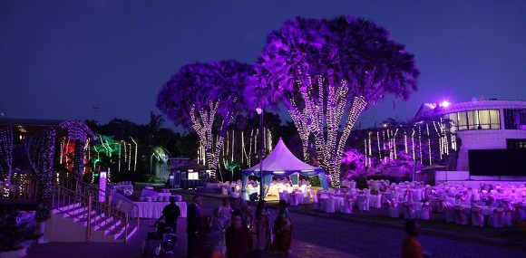
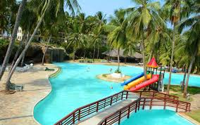

Experience the beautiful coastal sunshine at Wild Waters, the only family entertainment centre of its kind in Kenya! The park features a full day of fun for the entire family – whether you
take a thrilling plunge down the waterslides,
or just relax and float around the lazy river… there is something for everyone.We offer over 15 adult and kids slides,
a water play station, a one-of-a kind Raindance Arena, a variety of amusement and air rides, and bumper cars. In addition,
we have a scrumptious food court selling cuisines from around the world, and an excellent bar.
 Flamingo Beach Club is set among landscaped gardens with tropical palm trees and a lagoon-shaped swimming pool. Offering 2 restaurants and 4 bars, this resort is located directly on the beach overlooking Mombasa Marine Park. All of the very spacious rooms feature a balcony with a choice of Indian Ocean, pool or garden views. They are stylishly furnished with mosquito nets surrounding luxury bed linens and each has a flat-screen TV. Palm Restaurant has themed buffet meals for breakfast, lunch and dinner. Blue Lagoon includes a diverse à la carte menu overlooking the pool. There are light snacks and beverages throughout the various bars, some with Indian Ocean views.